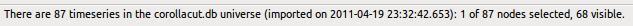

The application consists of only two windows, the application window and the Help window (the window you're seeing this text in now).
The application window is divided into three horizontal areas:
This occupies a horizontal strip across the top of the window. This is a standard pull-down menu bar. Click here for a full description.
Like the Application Menu Bar this occupies a strip across the width of the window. The status bar runs along the bottom of the window. Click here for a full description.
This occupies the remaining space in the application window and is itself divided into three vertical areas. This space is called a splitter. You can enlarge or reduce these areas at any time according to your personal preference by grabbing hold of the small red vertical handles between the areas and sliding them left and right. You can reduce the width of an area to zero if you wish to hide it temporarily; it can be enlarged again later by moving its handle right and left.
This pane contains the selector and the Universe toolbox. You can choose to display one or the other of these and switch between them using the tabs ("Selector" and "Universe") at the top of the pane.
This pane contains the Universe graph.
This page contains the XY Plot.
The BrandCommunities application provides an environment and tools to help you to identify non-obvious relationships between disparate timeseries data. For example, we might wish to see if there is any relationship between average earnings and house prices. But we can also analyse timeseries far more disparate than this. For example length of holidays and sugar consumption.
A database containing all timeseries we wish to analyse and compare is loaded into the application (File->Open). These timeseries are displayed in a tree in the Selector and as nodes in the Universe graph.
The Universe graph shows only the relationships between timeseries data, not the data of the timeseries themselves. Each timeseries is represented as a coloured circle (a node). Straight lines (links) represent the correlations between nodes. Links can be green (positive correlation) or red (negative correlation). The thickness of links indicates the strength of the correlation.
Once the graph has been laid out by centring a node (double-clicking on any node), the relative positions of nodes also indicates correlation strength: nodes with strong positive or negative correlations will tend to appear close together whilst nodes with poor correlations will tend to be further apart. Click here for details of this process. Many functions and options exist to help identify relationships here. Click here for the full details.
The XY Plot lets you plot the relationship in time between groups of three timeseries. These are called associations. You can display as many associations concurrently as you wish.
The application remembers your configuration for each database and loads it automatically for your when the application is started and when you change database.
The application's menu bar contains two drop-down menus: File and Help. They let you open a new database (File->Open) and obtain help about the application (Help->About) and this user guide (Help->User Guide).
This is a single line of text along the bottom of the window which indicates the name of the current database, how many timeseries it contains and an indication of how many timeseries are currently selected. It takes this form:

An association is a group of three timeseries which can be plotted against each other within the XY Plot in a Cartesian graph with one timeseries representing x, a second timeseries representing y and a third timeseries representing the bubble size. As the Time slider is moved between its two limits the bubble which corresponds to this association will change its position in x and y and its size according to the normalised values of the three timeseries that make up the association. By checking the Show locus check box, the locus of this association is displayed in the XY Plot graph.
A bubble represents an association at a specific timeslice. By moving the time slider left and right and so changing the current timeslice the bubble will move along its locus. In order for a bubble to be displayed all three of its associated timeseries must be valid at any particular timeslice; if one or more timeseries is undefined at that timeslice the bubble will not be displayed. The locus, however, will be displayed if its x and y components are valid, regardless of the value of its size timeseries.
When Universe display options are changed the Universe graph will be recalculated and redrawn automatically. Recentring is performed by double-clicking one of the visible nodes in the Universe graph or by double-clicking any node (tree leaf) in the selector. The calculation of the positions of nodes displayed in the Universe graph depends on:
The node chosen as the centre (i.e. the node that was double-clicked)
The state of the Decluster check box
The state of the log10 check box
The state of the Scale crosslinks check box.
The algorithm used to calculate the Universe node layout uses a least squares technique to attempt to find an optimal way to layout nodes. For a detailed description click here.
All your settings for the currently-open database are recorded in the database when you close it or when you quit the application. Settings include the colours of the nodes, their selections, associations and all control settings. When you next run the application (or switch database) your environment will be restored to a near-identical condition as when you last viewed this database. The only exception to this rule is the Show links check box which is automatically deselected when a database of more than 50 timeseries is opened. The only settings not saved at all are the expand/collapse state of the selector tree. Settings are saved per user, so another user's use of the same database will not interfere with your settings.
Clicking with the right mouse button whilst the mouse pointer is over an object on the screen may cause that object's context-sensitive menu to pop up. Not all objects have context-sensitive menus but when they do, the menu contains information about- and functions that may be applied to- that object. Nodes in the Universe graph have context-sensitive menus, as do bubbles in the XY Plot and branches & leaves (nodes) in the Selector. Other standard on-screen gadgets sometimes have context-sensitive menus (e.g. scrollbars do) but as they are platform-level and platform-specific facilities they are not described in this document.
In the XY Plot, right-clicking over a bubble will bring up a menu with the following options:
This is a toggle. Check it to make the bubble (association) special; uncheck it to return to the default, ordinary, status. A Special bubble is not effected by the dimmer control. Its label will always be displayed using a large font.
Select this to edit the bubble's label. Then move the mouse pointer to the label and make your changes. Moving the mouse pointer away from the bubble ends the label editing process.
Displays the values of the three timeseries which make up this bubble (association)
Displays the normalised values of the three timeseries which make up this bubble (association)
In the Universe graph, right-clicking over a node will bring up a menu with the following options:
A label showing the name of the node (timeseries). This label also tells you how many nodes you currently have selected.
If you have no nodes selected or this node is the only selected node this menu option will be available. Select it to create a new association in the XY Plot. In the new association this timeseries will represent the x, y and size axes.
If you have two nodes selected (or just one node other than this node) this menu option will be available. Select it to create a new association in the XY Plot. In the new association these two timeseries will represent the x and the y axes in no particular order. The size axis will use the same timeseries as the y axis.
If you have three nodes selected (or just two nodes other than this node) this menu option will be available. Select it to create a new association in the XY Plot. In the new association these three timeseries will represent the x, y and size axes in no particular order.
This is a toggle. Check it to make the node special; uncheck it to make it ordinary. Special nodes have their labels displayed permanently in a large font and their labels are not hidden by the Show Labels toggle
Select this option to set the colour of this node. A colour picker will be displayed.
Displays the values of all timeseries in the Universe graph.
Displays the normalised values of all timeseries in the Universe graph.
In the Selector tab, right-clicking over a branch or leaf (timeseries) of the selector tree will bring up a menu with the following option:
Select this option to set the colour of this node. A colour picker will be displayed. If a branch is selected, all nodes within that branch will have the colour applied to them. This is useful to apply colours to groups of timeseries.
Correlation is a measure of the similarity between two timeseries. Two timeseries correlate perfectly (correlation = 1.0), if they are identical. If one is the inverse of the other they correlate negatively (correlation = -1.0). If they don't resemble each other at all they will have a correlation of zero.
For all practical purposes, no difference is made between negative and positive correlations, except for the colour of the links in the Universe graph.
We differentiate two types of link in the Universe graph: one between the central node and any other node; another between non-central nodes. The latter we call cross links. If the Scale cross links check box is checked crosslinks are treated differently by the cutoff slider. In effect, their correlation values are reduced by multiplying them by the maximum correlation between the centre node and any other displayed node.
This is a translucent disk in the Universe graph which is placed 'on top' of cross links but 'beneath' centrally-connected links. It shares its centre with the two blue circles but it can have its diameter altered (between zero and the diameter of the outer blue circle) and its transparency altered (between completely transparent and completely opaque) so that it hides cross links. This can be used to declutter the Universe graph, particularly around the central section, when the Universe contains a large number of nodes and hence a very large number of links.
When the Universe nodes are laid out following centring we have to take care that non-central nodes with high values of correlation (values approaching +1.0 or -1.0) are not all piled upon one another, causing one or more nodes to be obscured by other nodes. Without declustering, nodes with correlations of +/- 1.0 will be laid out as closely together as possible. (Note that if their correlations with the central node differ they cannot be coincident because the distance between the central node and a non-central node is fixed.) In order to reduce the incidence of clustering you can check the Decluster check box in the universe controls tab pane. This will tend to force apart closely-correlating nodes, though it is not guaranteed to be successful in all circumstances. See the full description of the layout algorithm for a complete description. Remember that the Universe graph will not be recalculated unless you centre a node.
See Selector below.
In the XY Plot, this dial lets you alter the brightness of all bubbles and their loci. Transparency ranges from full brightness down to very feint indeed. Note that special nodes are unaffected by this control. Click here to see what it looks like.
Drag & drop allows you to setup associations in the XY Plot more easily. This works in the standard platform-specific way that you are probably already used to. Just grab hold of an object (by clicking on it with the left-hand mouse button and holding the button down), drag the object to its destination (just move the mouse until the mouse pointer is where you wish to deposit the object) then release the mouse button.
Objects that can be dragged are:
Nodes in the Universe graph
If there is no selection this will drag just the node that's being pointed to. If there is a selection the whole selection will be dragged. Note that the node pointed to does not have to be part of the selection but it will still be included in the drag.
If there is no selection this will drag just the node that's being pointed to. If there is a selection the whole selection will be dragged. Note that the node pointed to does not have to be part of the selection but it will still be included in the drag.
Dragged objects can have one of two types of target (the object over which the dragged object is 'dropped'):
An association combo box
In an existing association in the XY Plot there are three combo boxes corresponding to the x, the y and the size axes. Each of these combo boxes my be chosen as the target for a drop. The combo box will then change to the timeseries that was dragged into it. Although these combo boxes allow the dragging of multiple objects into them they can of course only assume the value of one of them, so be careful when dragging selections here because the combo boxes may not assume the values desired.
The new association push button
By dragging a selection of three timeseries (or a selection of two timeseries plus the object pointed to when the drag was initiated) into this push button we can create a new association containing these three timeseries. Because the timeseries may not be associated in the order desired you will normally have to swap them around using the yellow double-headed arrow push buttons within the association that was created.
When dragging from the Universe graph only one association may be created at a time. However, when dragging any multiple of three nodes from the Selector, any number of associations may be created.
In the XY plot, this control allows you to set the total duration of play when the Play button is pressed. The value set with this control defines the total duration of play from the minimum to maximum time in the database. If play is started whilst the Time Slider is not at the beginning the duration of play is reduced accordingly.
The Selector shows a tree (similar to a file system directory tree) which contains all timeseries contained in the currently-open database. Each branch of that tree may be expanded or collapsed by clicking on the symbol at the far left of each branch of the tree. This operation is only applied to a single level of the tree, so (sub-)branches at lower levels will keep their previous expand/collapse state. If you are used to using Microsoft's “Explorer” bugball you should be quite used to this behaviour.
Two buttons are provided below the Selector as shortcuts to expand ALL branches (Expand All) and to collapse ALL branches (Collapse All).
Remember that leaf nodes (these are the innermost levels in the tree and they represent the timeseries) can only be selected if their branches are completely expanded so that they are visible in the Selector.
The application is unusual in that it has the notion of a 'current' database which is loaded automatically on startup. Opening a new database closes the current database before opening another one as indicated by the user. In order to perform this operation select the main menu option File->Open.
An application menu option that closes the current database before opening a new one. The choice of new database is made by the user using a standard file opening dialog which is dependent on the platform in use (Linux, Macintosh, Windows,...). Before closing a database its configuration will be saved (so that it opens in the same state the next time it is opened) and the new database becomes the current database. Cancelling of this operation will leave the previous database valid and current.
A timeseries can have missing values. When this happens it is known as a lumpy series.
An application menu option which opens a modal dialog showing the name of the application and its build version, the names of its authors and the version numbers of third-party packages used for some of its functionality.
An application menu option which displays the help information you are reading now.
The mouse pointer is said to 'hover' over an object when it points at or within that object and no mouse buttons are pressed. Hovering for more than a few moments often causes a tooltip to be displayed, giving some useful information about that object or a brief description of its function.
In order to lay out the nodes (timeseries) in the Universe graph a bespoke graphing layout algorithm is employed. Whilst the methods used in this calculation are straightforward the consequences can be complex so here is a moderately-detailed description of that algorithm:
We place one selected node in the centre of the graph. This is the central node (or the centred node), chosen by the user double-clicking any node in the Universe graph or in the Selector. There are two blue circles which are permanently displayed in this graph. They are concentric with the central node. The smaller of the two circles represents a correlation of 1.0 (or -1.0) with the central node. So no node may be nearer to the central node than this blue circle. Put another way, if a non-central node has a correlation of +/- 1.0 with the central node it will be placed on this smaller blue circle.
The large of the blue circles represents a correlation of 0.0 with the central node. So no node may be further from the central node than this blue circle. Put another way, is a node has zero correlation with the central node it will be placed on this larger outer circle.
Correlations between these two extremes are spaced linearly between the two circles. Each node is now free to be placed anywhere on the circle described by its correlation.
This distance is precise and reliable and it does not change no matter which layout options are chosen to display the graph.
The second consideration in laying out the Universe nodes is the distances between non-central nodes, i.e. the distance between each pair of nodes where neither node is the central nodes. We seek to represent these correlations in the same way as we did for central nodes, i.e. the distance between the nodes represents the strength of the correlation between them. In practice we can very rarely achieve this because a precise solution requires a graph in N-1 dimensions (where N is the number of nodes) and we only have two dimensions in which to display them. So we try to ensure that these distances are indicative of their associated correlations. Even this we cannot always achieve because in some circumstances nodes with very low correlations may be forced together whilst well-correlating nodes may be forced apart.
In order to get the best compromise we use a least squares algorithm. The result will, in most circumstances, be a fairly useful laying out of nodes, though small anomalies will sometimes arise. Ideally we want non-correlating nodes to be separated by the diameter of the large blue circle and perfectly-correlating nodes to be to be separated by a small distance, for example 50 pixels on the screen.
Next, we have to consider declustering. Links can be perceived as springs between nodes, with low-correlating links pushing their connected nodes apart and high-correlating links pulling their connected nodes together. The final layout will be an equilibrium state where the pushings and pullings all balance. If, for example, 50 nodes are all pushing two nodes closer together than they would like to be, the single 'spring' between them will be swamped by the pushings and pullings of the other 50 'springs'. So, what we do in this case is provide a special 'spring' between two nodes when they get very close together. This special 'spring' pushes the two nodes apart more and more strongly as the two nodes approach each other. The result is an equilibrium state that is effective for the majority of cases (it keeps nodes from becoming coincident) but that can sometimes leave two nodes overlapping when there are many powerful effects in play.
Bear in mind that the solution adopted is not the only solution to this problem. Other solutions will produce quite different graph layouts and perhaps be equally valid. The particularity of the algorithm adopted is that it respects the distances between central nodes and non-central nodes.
Least Squares is the most commonly algorithm used to fit a curve to a set of data points. It is an iterative process that seeks to minimise the 'error' between the data points and the solution curve. At its simplest it is used to fit a straight line to a set of experimentally-collected data points which contain a degree of scatter. Put another way, a set of data points that is supposed to represent a straight line may contain effects that cause those experimental observations to stray away from the straight line that is supposed to connect them all. In order to calculate the 'best fit' straight line we propose some straight line or other and calculate just how wrong we were by computing the 'error' between that line and the data points. If we then propose a different straight line, calculate the error in the same way and find that the error is smaller than in our first attempt we know that our second attempt is 'better' than our first. If not, we abandon our second attempt and try a third. If we continue in this way, choosing our subsequent straight lines with a little intelligence we can keep reducing the 'error' until it becomes acceptably small.
We use a form of this algorithm to find the 'best' placement of nodes in the Universe graph.
Least Squares describes the means we use to calculate the 'error' between our proposed solution and the data we have. The optimal zero-error solution is generally-unobtainable but if it exists it should be found. In least squares the error is calculated by summing the squares of the differences between each data point and our proposed solution.
Links represent correlations between nodes in the Universe graph. They are drawn as straight lines between the centres of the circles representing nodes (timeseries). Links can be red (when the correlation is negative) and green (when the correlation is zero or positive). A peculiarity of the application is that correlations (and hence links) exist between each node and every other node. If there are N nodes then there will be N * (N-1) / 2 links. So, for a Universe consisting of 50 nodes there will be 1225 links. For a Universe of 100 nodes there will be nearly 5000 links.
The thickness of a link represents the strength of the correlation, with zero correlation giving a link thickness of 1, and a correlation of +/- 1.0 giving a link thickness of 5. Link thicknesses are integer numbers and are only relative, so there is no absolute unit of thickness. If you zoom into the Universe graph the thickness of links will increase according to the zoom factor.
Links are always displayed 'behind' nodes and so their endpoints will always be obscured by their nodes unless node display is turned off.
Cross links are displayed behind the Declutter Disk, whilst centrally-connected links are displayed in front of it. This allows us to dim (or remove completely from the display) cross links so as to reduce clutter, particularly around the central area of the Universe graph.
This allows you to choose a cutoff correlation value. Links whose correlation is less than this cutoff value are not displayed in the Universe graph. The cutoff value is selected using a slider control. Click here to see what it looks like. If ALL links to a node have been removed by virtue of having correlation values less than this cutoff value, the node will also be removed from the display. The effect of the Link Cutoff is altered by the checking of the Scale crosslinks checkbox.
You can vary the opacity of all links in the Universe graph by moving this slider. By default, link opacity is 1.0 (completely opaque). It can be reduced to zero (completely transparent) whereupon links will no longer be visible. Click here to see what this control looks like.
In the XY Plot, Associations can be defined. Each of these represents a combination of three timeseries expressed as a Bubble in x and y (first and second timeseries) and whose size is dictated by the third timeseries. The position and size of the bubble varies in time. The locus traces the (x, y) position of the bubble throughout all time and describes the path that the bubble will take when the timeslice is varied by manipulation of the Time Slider or by pressing the Play button.
Note that the locus depends only on the first two timeseries of the association and both timeseries have to have a valid value at any particular timeslice for that segment of the locus to be drawn. The bubble on the other hand requires valid values in all three timeseries, so just because a segment of the locus is visible doesn't necessarily mean that the bubble will be visible in that segment.
The loci for all associations may be displayed or hidden by toggling of the Show locus check box.
In the Universe graph the optimum length of cross links is altered by the application of a logarithm function. The effect of this is to make low correlations (those approaching zero) less significant than high correlations (those approaching +/- 1.0) in the calculation of the graph layout. Check this box to turn the function on; uncheck it to turn it off.
A lumpy is merely a timeseries with gaps in it, e.g.
Jan 1989 Feb 1989 Mar 1989 Apr 1989
Sales ($) 23 26 25 A modal dialog, as far as this application is concerned, is a window which forbids user interaction with other windows of the same application whilst the modal dialog is open. Close the modal dialog to regain control of the main window.
A node is a representation of a timeseries in the Universe graph. It is a coloured circle displayed at a Cartesian coordinate (x, y) in the graph. Each node is connected to every other node by links which represent the correlation between the timeseries of the connected nodes.
In order to display timeseries in the XY Plot we normalise them to fit the range 0.0 … 1.0, with 0.0 representing the timeseries' minimum value and 1.0 its maximum. Using a bubble's context-sensitive menu the normalised values of the three timeseries can be displayed.
Panning is the movement of an object (usually a background object) up, down, left and right. Panning is available in the Universe graph by clicking on the graph background with the left hand mouse button, holding the mouse button down and moving the mouse until the required view is achieved. Panning is usually used along with zooming to display the part of the graph of particular interest. Note that it is not possible to pan the Universe graph beyond the limits of the visible items displayed in the graph, so panning is generally useful only when viewing the graph at high magnification.
See the Play Button for a description of this control.
Associations of timeseries in the XY Plot are displayed against time by sliding the Time Slider right and left. By pressing the Play button you can instead get the application to run through the time axis automatically. Play will start from whatever the current position of the Time Slider is and stop when it reaches its right hand end. You can press the Pause button at any time to interrupt play.
The duration of play is set using the Duration dial.
In the Universe graph, nodes can be selected by rubberbanding. This standard process consists of clicking and holding the left mouse button at one corner of an imaginary rectangle that would contain the nodes you wish to select, moving the mouse pointer to the opposite corner of this rectangle and then releasing the mouse button. All nodes within or touching this rectangle will be selected. The selection deselects all previously-selected nodes.
This is an option which modifies the effect of the cutoff slider in the Universe graph. Checking this option causes the cutoff slider to see the correlation values of cross links to be less than their real values and so enabling cross links to be removed more easily from the graph using the cutoff slider. In effect, the correlation values of cross links are multiplied by the maximum correlation between all nodes and the central node. If this maximum is 1.0 this option has no effect. Note that this toggle has no effect on the correlation values seen in the Universe graph (link tooltips) and in its profile and normalised profile functions. Click here to see what this control looks like.
See Selector below
Timeseries nodes can be selected by clicking on them in the Universe graph. This operation deselects all other nodes. To select several nodes hold down the CTRL button whilst clicking on a node. You can also select nodes using a rubber-band selection. Whilst holding down CTRL, move the mouse to make an orthogonal box around the nodes you wish to select. On the display you will see this box shrinking and enlarging as you move the mouse. When you are happy with your selection release the mouse button.
Timeseries nodes can also be selected using the Selector. Please refer to the selector documentation for a full description.
Available by clicking the Selector tab in the leftmost splitter pane. This pane shows a tree of all Universe nodes. Each branch or leaf (node) of the tree can be turned on or off by clicking the check box next to the name of the branch or node. All nodes in a branch that has been turned off using this check box will be removed from the Universe graph. All nodes in a branch that has been turned on will be displayed in the Universe graph.
Branches can be opened (expanded) or closed (collapsed) by clicking the symbol at the left of each branch or node name.
You can expand all branches by pressing the Expand All push button or you can collapse all branches by pressing the Collapse All push button. The leaves of the tree (nodes) can be selected by clicking on their names. Selecting a new node in this way cancels any previous selection. By holding down the CTRL button whilst clicking on a node you can augment the current selection by adding or removing this node from that selection. Pressing the Select All push button or clicking on a node and then pressing CTRL-A on the keyboard will select all nodes that are visible in the tree (expanded). Pressing the Deselect All push button will clear the selection.
Nodes selected in this way will also be selected on the Universe graph.
The Dump Tree push button prints a textual representation of the tree to the console.
The selector represents a tree in which are included all nodes (timeseries) in the current database. Nodes (timeseries) represent the leaves of that tree.
A toggle in the Universe Toolbox. Check this to display labels in the Universe Graph; uncheck it to hide them. Note that special nodes are unaffected by this control and will always display their labels.
A toggle in the Universe Toolbox. Check this to display links in the Universe graph; uncheck it hide links.
A toggle in the XY Plot that allows you to turn on and off the display of loci. It applies to all associations.
A toggle in the Universe Toolbox. Check this to display nodes in the Universe graph; uncheck it to hide nodes.
Special bubbles are bubbles in the XY Plot that are unaffected by the Dimmer control and whose labels are always displayed in a large font.
Special nodes are nodes in the Universe graph whose labels are always displayed and always appear in a large font.
The window is divided into three vertical spaces:
Tabbed Pane
This contains:
Shows a tree of timeseries, with timeseries grouping as defined in the database. Use the selector to select nodes in the Universe graph, turn them on and off and change their colours
Includes all controls for the display of the Universe graph. See below for details.
A two-dimensional graph of timeseries (nodes) connected to each other by lines (links) representing the correlation between nodes. The thickness of the line indicates the strength of the correlation and the colour indicates its sign (red is for negative correlations, green is for positive correlations). The distance between nodes also represents the correlation strengths with high correlations pulling nodes together and low correlations pushing nodes apart. Note that de-clustering is applied to minimise the occurrence of multiple nodes piled on top of each other. Redrawing of the graph is performed by double-clicking on a node; this puts that node into the centre of the graph and arranges the other nodes around it in an optimal fashion. Please click here for more detail.
Allows the operator to compare timeseries by plotting associations of three timeseries as a bubble in a Cartesian graph (one timeseries in x, one in y and one controlling the bubble size). Any number of associations may be plotted. The graph can display the locus of each association as well as showing the evolution of the bubble in time. Please click here for more detail.
The size of each splitter pane can be altered by clicking on the vertical red bar (handle) separating panes and sliding it to the right and to the left. Panes can be closed temporarily and re-opened later by sliding these handles.
A vertical or horizontal red bar that can be slid right and left (vertical bars) or up and down (horizontal bars) to change the sizes of the panes within the application window. See Splitter above.
In the XY Plot the Time Slider controls which particular timeslice we are currently displaying in the graph. The Time Slider covers the complete range of times from the earliest to the latest time of all timeseries in the current database. Each individual timeseries in unlikely to be valid over the whole of this range.
By moving the Time Slider right and left you can select different timeslices to display in the Graph. Use of the Play Button causes time to progress in the forward direction from its current position until the end of the range of times. Press the Pause Button to interrupt play. The duration of play is controlled by the Duration control.
Each timeseries contains one or more values corresponding to a particular time, e.g. 2002-03. Each different value of time within the database is called a timeslice.
A list of data items over time, e.g.
Jan 1989 Feb 1989 Mar 1989 Apr 1989
Sales ($) 23 24 26 25A timeseries can have any length and can even have gaps; in this case it is called lumpy.
These are small textual labels which pop up when the mouse pointer is hovering over some types of objects. Nodes and links have tooltips. The node tooltip displays the source of the timeseries and the link tooltip displays the value of the correlation it represents.
Some controls have tooltips and these will pop up when the mouse pointer hovers over the control.
The Universe graph is a two-dimensional graphical display of timeseries where a timeseries is represented as a node (a coloured blob). Each timeseries is separated from another timeseries according to the correlation between those timeseries. If two timeseries correlate closely they will be close together in the Universe graph. If they don't correlate well they will be far apart.
A correlation is represented as a straight line between two timeseries (nodes) with the thickness of the line indicating the strength of the correlation and the colour representing its sign; negative correlations are shown in red and positive correlations in green. The thickness of the line represents the strength of the correlation (a thickness of 1 for zero correlation and 5 for a correlation of +1.0 or -1.0, the maximum).
Note that in the Universe graph a timeseries is treated as a simple object and the details of the series it represents is not used here. If you want to see the timeseries data, select Profile or Normalised Profile in a node's context-sensitive menu (right-click on a node to do this).
The graph is calculated and plotted by double-clicking on a node. That node is brought to the centre of the graph and all remaining nodes are displayed around it. The smaller blue circle represents the maximum correlation of any node with the central node and so no node may be closer to the central node than this blue circle. The larger blue circle represents the minimum correlation of any node with the central node and so no node may be further away from the central node than this blue circle. These distances are precise.
However, the distance between the non-central nodes is a compromise (calculated using a least squares approach) which attempts to indicate the strength of the correlation between each pair of nodes by their separation. The reason these distances are not precise is because it is impossible to map an n-dimensional graph to two dimensions. Also, attempts are made to avoid multiple nodes being piled on top of each other (de-clustering). The diameter of the large blue circle represents the minimum correlation (zero) between two non-central nodes.
You can choose which nodes to display in the Universe graph by selecting and deselecting nodes or groups of nodes in the selector.
The Universe graph is not recalculated automatically: if you change the graph conditions (for example by selecting additional nodes), double click any node to recalculate and redisplay the Universe graph.
By hovering over a node, a tooltip will be displayed showing the source of the timeseries data. By hovering over a link, a tooltip will be displayed showing the value of the correlation represented by this link.
For selection of nodes click here.
You can zoom in and out of the Universe Graph using the mouse wheel.
Clicking on the Universe graph background and moving the mouse will cause the Universe graph to be moved up, down, right and left. Click here for more information.
Functions available in the context-sensitive menu for each node are:
Populate x: Creates a new association in the XY Plot where this node's timeseries form the x, y and size component of the association.
Populate xy: Creates a new association in the XY Plot where this node's timeseries and the timeseries of another, selected node compose the x and y components. One of these timeseries is also used to compose the size component.
Populate xyz: Creates a new association in the XY Plot where this node's timeseries and the timeseries of two other, selected, nodes compose the x, y and size components.
Special: a toggle which enlarges the node's text and keeps it enlarged. The text of a special node will be displayed even if node labels have been turned off in the Universe controls tab. Select this option a second time to toggle it off.
Set colour: Choose a display colour for this node.
Profile: Displays the timeseries for all nodes. The timeseries for this particular node is highlighted.
Normalised profile: Displays the normalised timeseries for all nodes. The normalised timeseries has been shifted and scaled so its values range between 0.0 and 1.0
Other functions: Several additional functions are available to control the display of this graph. Please click here.
Most functions available in the Universe graph are available in the Universe controls tab pane. Additional functionality includes:
Inclusion and exclusion of nodes from the graph
Most of the controls available to the Universe graph are contained in the Universe tab pane, shown on the left. This is contained in the leftmost splitter pane of the application's main window. This pane provides several display controls for the Universe graph as well as some controls to alter the way the graph is calculated.
Show nodes: A toggle which turns on and off the display of nodes. Note that this is purely a display function. Nodes are still included in the graph calculation and you can still see their links.
Show links: A toggle which turns on and off the display of correlation links. Note that this is purely a display function and its setting does not alter how the graph is calculated.
Show labels: A toggle which turns on and off the display of textual node labels. If a node has been made special, this toggle has no effect on the display of that node and its label.
Link opacity: Allows you to control the transparency of all links. A transparency of 0.00 means that the links are totally transparent and cannot be seen.
Link cutoff: Allows you to control whether or not links with small correlation values are displayed. Setting this to 1.0 means that only links representing a correlation of 1.00 will be displayed. Setting this to 0.00 means that all links will be displayed. Because there is a link from each to every node, the graph can get quite cluttered if there are many nodes being displayed. This slider can be useful for de-cluttering the graph in these circumstances. Because the weak correlations tend to be very long, this function can be very effective when you're only interested in strong correlations.
Indirect: Toggling this option on reduces the values of cross correlations (a correlation between two non-central nodes) as perceived by the cutoff slider. It does not alter any values displayed in the graph but it means that cross correlations will be removed more easily by the cutoff slider than correlations to the central-node. It works by effectively multiplying the value of a cross correlation by the maximum of all correlations to the central node. If the maximum correlation with the central node is 1.0 this toggle has no effect.
Decluster: Toggling this option on will attempt to reduce the incidence of nodes piling up on top of each other (and hence obscuring each other) by encouraging them to separate sightly. Bear in mind that the distance from the central node cannot be changed so this function causes coincident nodes to spread out on an arc around the centre of the graph.
log10: Toggling this option on transforms the values of cross correlations (correlations between non-central nodes) from a linear profile to a logarithmic profile. This causes less importance to be attached to maintaining the separation of low-correlating nodes, so making it more likely that well-correlating nodes are spaced apart more faithfully.
Graph type: This control used to allow the selection of different graph types. This is now redundant and will likely be removed shortly.
Animation type: This used to allow the selection of the animation profile (just how nodes move around the graph when it is redisplayed). A smooth algorithm has now been fixed here making this menu redundant. This control will likely be removed shortly.
De-clutter opacity slider: Imagine a translucent disk centred positioned in front of cross correlations but behind those links with the central node. By changing the opacity of this disk we can show or hide (dim) the appearance of cross links. Changing the size of this disk allows us to cover the whole graph or nothing at all. Using this sliders we can make the central part of the graph more easy to view and understand, when there are large numbers of links in the graph. You can see what these controls look like by clicking here. To change the size of the opaque disk just grab hold of its edge in the Universe graph and drag the mouse - you will see the disk size change immediately.
All controls for the XY Plot are contained within the XY Plot's splitter pane. A snapshot showing the XY Plot being used with the Selector is shown here.
XY Plot controls consist of:
Time Slider: Lets you select a timeslice within the range of times available in the current database. Also indicates the timeslice being displayed during Play.
Duration Control: Allows you to select the total duration of Play. If the Time Slider is not at the minimum time when Play is started, the total duration of Play is reduced accordingly so as to ensure a constant Play speed. This control may be altered during Play.
Timeslice Label: Shows the current timeslice being represented by the bubbles in the XY Plot as well as by the Time Slider.
Dimmer Control: Lets you control the transparency of the bubbles and their loci. If set to maximum the bubbles and loci are completely opaque; if set to minimum they become very transparent but remain visible. Note that this control has no effect on special bubbles.
Show Locus checkbox: Lets you turn on and off the display of the loci for all associations.
Smooth time checkbox: When a bubble moves significantly from one timeslice to the next (for example when the database contains only a few timeslices), the Play function causes bubbles to 'jump' from one position to the next. Checking this option smooths these transitions for better visual appreciation.
Play and Pause buttons: Controls that allow you to start and stop the Play function.
Available in the rightmost splitter pane, the XY Plot allows you to plot associations of three timeseries on a Cartesian graph. One timeseries will be associated with the x axis, a second timeseries with the y axis and a third timeseries with the size axis (i.e. the size of the bubble representing this association).
By moving the Time slider left and right you can see the values of these three timeseries at any time by the bubble's position and size on the graph. The time currently being viewed is displayed by the green label at the right hand side of this pane and by the grey watermark in the graph itself. If displaying monthly data this label may take the form "1998-02".
The full range of times available in this database are displayed at the extreme ends of the time slider. However, each timeseries may not necessarily span the full range of times available.
For a bubble to be displayed all three of its timeseries have to be valid at the current timeslice.
By toggling the Show locus check box, you can display a trace of all associations across the total available time period for this database.
Pressing the Play button causes the advancement of associations to be played out like a movie, starting at the current position of the time slider and stopping either when the movie reaches the end (right hand end of the time slider) or when you press the pause button. The duration of the movie is set by the Duration dial. This can be altered at any time, even whilst playing a movie. The duration value represents the total time to play the movie from beginning to end.
For databases containing few different times the movement of the bubbles in the graph will be "jumpy" as they move from one discrete position to the next. By toggling the Smooth time check box you can make these transitions appear continuous.
The Dimmer dial allows you to alter the brightness of all bubbles and their associated traces (loci).
Across the top of this pane is an area that shows the associations that have been defined as well as allowing you to delete associations and create new ones.
Each line of this list shows:
|
|
A delete button allowing deletion of this association. |
|
An identification number (id) which is used to label the bubble in the graph. This also shows the colour of the association in the graph. Colours in the XY Plot are allocated automatically and cannot be changed. |
|
|
A hide toggle allowing you to hide or display each association individually. |
|
|
A definition of each of the three axes: x, y and size. Each axis is defined by the name of the timeseries associated with this axis (selectable from the set of all available timeseries, using a combo box), a lag control allowing you to alter the phase of this timeseries within the range +/- 12 time slices and a log check box which calibrates this axis to a logarithmic or linear function. |
|
|
Swap timeseries: Between the three axis definitions are two yellow buttons which allow you, by pushing them, to swap the timeseries in the axes either side of the push button. |
The pane containing the associations is also a splitter pane and can be enlarged or reduced by grabbing the splitter handle (the horizontal red bar just below the association list) and moving it to a new position. Each splitter pane can be temporarily hidden by sliding the handle to the top or the bottom of the window. It can be shown again later by sliding this same handle up and down.
Create a New Association: To add a new association, press the add push button: then select the timeseries you wish to associate with each axis by manipulating the combo boxes in the new association.
Alternatively you can set the combo boxes by dragging a node from the Universe graph or a node (leaf) from the selector into each combo box individually.
Another way of creating a new association is by selecting three nodes in the Universe graph and dragging them together onto the XY Plot Add button: . This can also be done from the selector.
Several functions are available on the context menu (right-click on a bubble). These are:
Special: Makes this node special. Special nodes are not effected by the Dimmer control
Edit label: Allows you to modify the text of this bubble's label.
Profile: Displays the values of the timeseries used to display this bubble.
Normalised profile: Displays the normalised values of the timeseries used to display this bubble. Normalised values range from 0.0 (minimum of the timeseries) to 1.0 (maximum of the timeseries).
You can zoom in and out of the Universe Graph using the mouse wheel. This function may also be available on the trackpad, depending on how your computer is set up. See your sysadmin to enable this functionality.